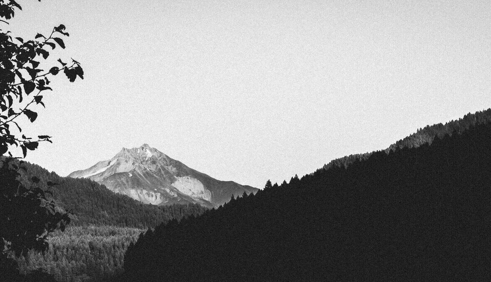

From Portland to Portland
An epic bicycle journey from Portland, ME. to Portland, OR
Your journey starts here
Know the country you live in a little better
That's exactly what we have arranged for you via this travel story
Need more action and adventure in your life instead of the same old routine? From Portland, Maine to Portland, Oregon we're going to take you on an exciting journey through some unknown regions of your country. Leave the car at home and travel by bike starting in New England where it all began. You will pass through 12 beautiful states, covering a total of 3,600 miles, and accomplish 3 monumental missions. Partying and taking a selfie with a famous rock star, donating $1 to a billionaire to help eradicate polio in Africa, and even stopping by famous author Stephen King's house to say hi and asking him to sign your favorite book.
- Distance (miles) 3,644
- Travel time (days) 22
- Highest point (feet) 9,613
- Lowest point (feet)Â -3